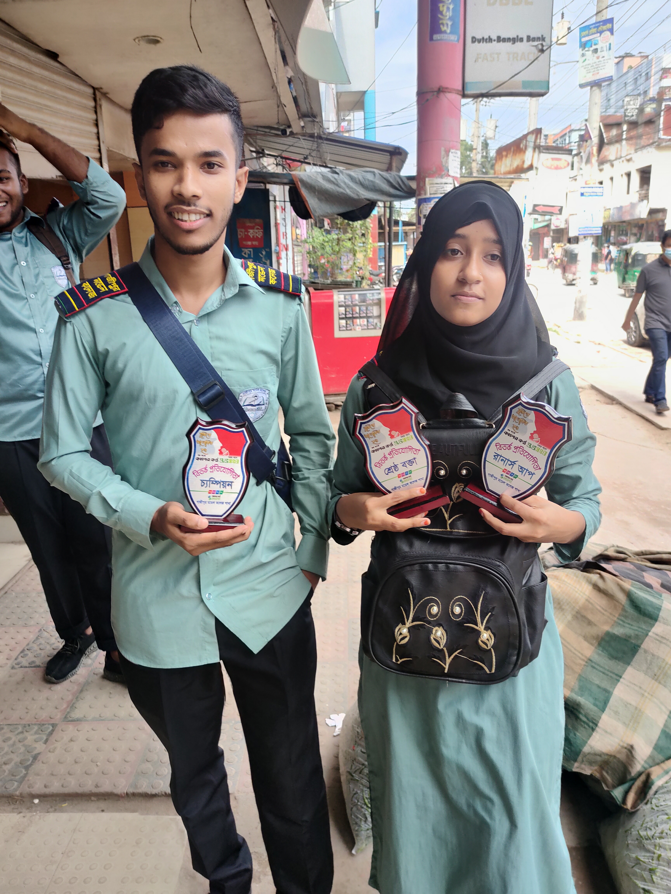

Ami Model College Pori

ami gazipur model college a study kori.. suru te kemon jani silo porichito keo silo na aka aka college a jaitam karo sathe kotha boltam na . tar por udoy ar sathe first kotha holo tar por valo bondu ,, tar por onek valo bondu sob somoy adda ditam college a tar baire onek gura guri korsi sobai mile,, dorte gele vular moto na somoy gulo
bitorko Pratiyagita
din ta onek voy voy niye suru hoisilo karon ami kisu jani na age kono din amon vabe bitorko potijogitay attend kori nai.. moner betor onek voy kaj korsilo ki korbo na korbo tai niye onek voy pachilam ,, amr friend ra aktu sahos deoyar karone ami kisu akta bolte parsi ,, jodio temon akta valo kisu korte pari nai amader dol 3 jon silo ami aka sele ar 2 jon meye ak jon amar class friend ar ak jon boro apu to onek kosto kore win hoisilam sotti bolte ,, boro apur jono hoito ba amra win hoite parsi . karon tini onek valo bolesilen
ses velay amra jite ee gelam sotti bolte ata kono din vabi ni amra jitbo. onek khusi hoisilam sei din ... oi din udoy re miss korsilam o thakle aro onek valo hoito pase o amr biporid dol a silo
college ar niche photo ta tula se amar biporid dol ar silo 2 ta puroskar paise ami akta afsos nai amra to win hoisi..
Neetu / Sangeet/kavita abriti/ Pratiyagita
aro akta khusir din ai din ta amar jono onek ta ono rokhom silo bolar moto na ami kavita ar gan gaisilam sei din kobita na bole ar valo lagbe na
অসম্পর্ন পাথুরে হাসি
লেখক মারুফ আহমেদ
জেনে গেছে আজ শ্রাবণের ধারা,,,
বৃষ্টি হবে না,,,,,
মেঘলা আকাশ ছাড়া,,,,
তাইতো আজ,,,,,
শ্রাবণের চোখের জল,,,,,,,
চিরদিনের জন্য হয়ে গেছে ঝলমল,,,
মেঘলা আকাশ জমে গেছে,,,
অন্য কারও আকাশে,,,,
আমার আকাশের রেখে গেছে,,,
শত কষ্টের ঢল,,,,,,
তাইতো বদলে গেছে শ্রাবণের ধারা,,,,,,,
সে আর মেঘলা আকাশের জন্য অপেক্ষা করে না,,,
ঝরে গেছে আজ,,,,
মেঘলা আকাশের জন্য,,,,,
শ্রাবন'এর
সর্বশেষ শেষ ভালোবাসা পাতা ঘর,,,,
হাজার তারার মাঝেও,,,,,
যেমন,,,,
ওই চাদটা একা হয়ে রয়ে গেছে,
চাঁদের মত ছিল,,,,,,
আমার জীবনে আলো,,,,,,
ছেড়ে চলে গেছে ,,,,
তাইতো হয়ে গেছে চাঁদের আলো কালো,,,
শত পাতার মাঝেও যেমন গোলাপটা একা আজো আছে,
গোলাপের পাতার মত পাসে ছিলোই কতই না লোক,,,,
আপন স্বার্থে সবাই চলে গেছে,,,,
আমায় দিয়ে গেছে অন্ধকার তিলক
হাজারো মানুষের মধ্যে আমি একা হয়ে গেছি,,,,
কত ব্যথা হ্রদয়জুরে তবুও হাসি এ'দুই ঠোটে,,,
হাসিয়া কাঁদি আমি বোঝেনা তো কেউ,,,
মনের ভেতর লুকিয়ে আছে,,,
শত ব্যর্থতার ঢেউ
এই বর্ষাকালের ভরা নদী,,,
মুগ্ধ করেছে আমায়,,,,
এই শীতকালের ঘন কুয়াশা,,,
ভালবাসতে বাধ্য করেছে আমায়,,,,
এই গরম কালের শীতল বাতাস,,,,
বাঁচতে শিখিয়েছে আমায়,,,,
এই বাংলার প্রকৃতি,,,
শত কষ্টের মাঝেও হাসিয়েছে আমার,,,
.jpeg)